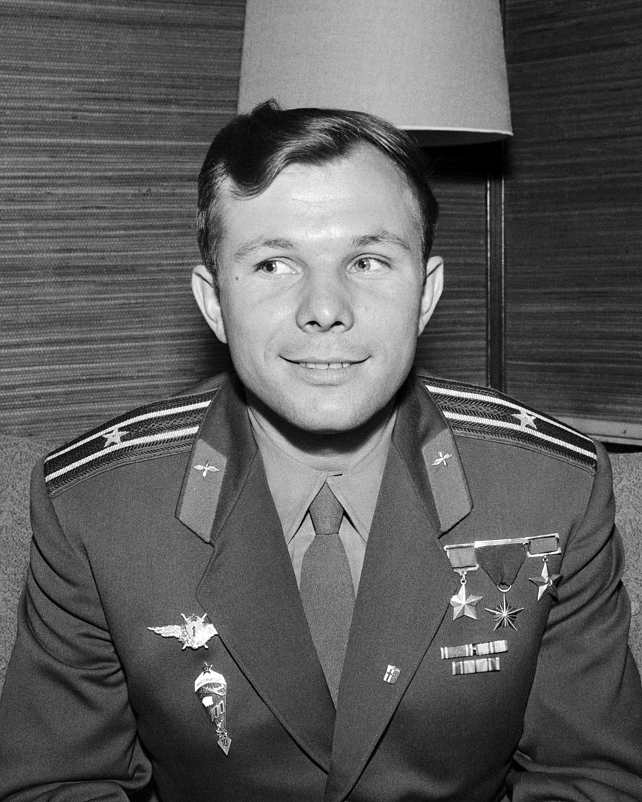

Биография
Путь от смоленского паренька до мировой легенды
Детство и юность
Юрий Алексеевич Гагарин родился 9 марта 1934 года в деревне Клушино Смоленской области. Его семья была крестьянской: отец — Алексей Иванович Гагарин — плотник, мать — Анна Тимофеевна Матвеева — работала на молочно-товарной ферме. Детство пришлось на тяжёлые военные годы — деревню оккупировали немцы, и семья пережила много лишений. Тем не менее, после войны Юрий продолжил учёбу, а затем поступил в Люберецкое ремесленное училище, где получил специальность формовщика-литейщика.
Становление лётчиком
Увлечение авиацией привело Гагарина в Саратовский индустриальный техникум, а затем в аэроклуб. В 1955 году он совершил свой первый самостоятельный полёт на самолёте Як-18. Вскоре был призван в армию и направлен в Оренбургское военное авиационное училище лётчиков, которое с отличием окончил в 1957 году. Служил в истребительном авиационном полку Северного флота, где получил квалификацию «Военный лётчик 1-го класса».
Отряд космонавтов
В 1959 году начался секретный отбор в первый отряд космонавтов СССР. Из трёх тысяч лётчиков отобрали 20 человек. Гагарин прошёл все испытания: центрифугу, барокамеру, термокамеру, сурдокамеру (испытание на полную изоляцию), парашютную подготовку и тренировки в невесомости. Руководитель подготовки Николай Каманин отмечал невероятное самообладание и ясность ума Гагарина.
Звёздный час
12 апреля 1961 года в 09:07 по московскому времени с космодрома Байконур стартовал космический корабль «Восток-1». Позывной Гагарина — «Кедр». За 108 минут корабль совершил один оборот вокруг Земли и благополучно приземлился в Саратовской области. Этот полёт сделал Гагарина всемирным героем. Он награждён званием Героя Советского Союза, а день 12 апреля стал Всемирным днём авиации и космонавтики.
Жизнь после полёта
После исторического события Гагарин объездил почти все страны мира с «Миссией мира», став лицом советской космической программы. Продолжал лётную практику, осваивал новые типы самолётов, помогал готовить следующих космонавтов. Трагически погиб 27 марта 1968 года во время тренировочного полёта на самолёте МиГ-15УТИ вместе с инструктором Владимиром Серёгиным. Похоронен у Кремлёвской стены на Красной площади в Москве.
Память о Юрии Гагарине живёт в названиях городов, улиц, проспектов, в многочисленных памятниках и, конечно, в сердцах миллионов людей, для которых он навсегда останется первым гражданином Вселенной.

Факты
- Позывной: Кедр
- Длительность полёта: 108 минут
- Максимальная высота: 327 км
- Максимальная перегрузка: до 6g
- Знаменитая фраза: «Поехали!»